Examples
These examples show how to use the various analysis capabilities of GEBT.jl. Some of the examples also provide a verification/validation for the implementation of geometrically exact beam theory in GEBT.jl.
- Examples
- Linear Analysis of a Cantilever Partially Under a Uniform Distributed Load
- Linear Analysis of a Beam Under a Linear Distributed Load
- Nonlinear Analysis of a Cantilever Subjected to a Constant Tip Load
- Nonlinear Analysis of a Cantilever Subjected to a Constant Moment
- Nonlinear Analysis of the Bending of a Curved Beam in 3D Space
- Rotating Beam with a Swept Tip
- Dynamic Nonlinear Analysis of a Wind Turbine Blade
- Nonlinear Time-Marching and Eigenvalue Analysis of a Beam Assembly
Linear Analysis of a Cantilever Partially Under a Uniform Distributed Load
This example shows how to predict the behavior of a cantilever beam which is partially subjected to a uniform distributed load.

using GEBT, LinearAlgebra
nelem = 12
# create points
n1 = n3 = div(nelem, 3)
n2 = nelem - n1 - n3
x1 = range(0, 0.3, length=n1+1)
x2 = range(0.3, 0.7, length=n2+1)
x3 = range(0.7, 1.0, length=n3+1)
x = vcat(x1, x2[2:end], x3[2:end])
y = zero(x)
z = zero(x)
points = [[x[i],y[i],z[i]] for i = 1:length(x)]
# index of endpoints for each beam element
start = 1:nelem
stop = 2:nelem+1
# create compliance matrix for each beam element
compliance = fill(Diagonal([2.93944738387698E-10, 0, 0, 4.69246721094557E-08, 6.79584e-8, 1.37068861370898E-09]), nelem)
# create assembly
assembly = Assembly(points, start, stop, compliance=compliance)
# set prescribed conditions (fixed right endpoint)
prescribed_conditions = Dict(
nelem+1 => PrescribedConditions(ux=0, uy=0, uz=0, theta_x=0, theta_y=0, theta_z=0)
)
# create distributed load
distributed_loads = Dict()
for ielem in n1+1:n1+n2
distributed_loads[ielem] = DistributedLoads(assembly, ielem; fz = (s) -> 1000)
end
system, converged = static_analysis(assembly, prescribed_conditions=prescribed_conditions,
distributed_loads=distributed_loads, linear=true)
state = AssemblyState(system, assembly, prescribed_conditions=prescribed_conditions)We can construct the analytical solution for this problem by integrating from the fixed end of the cantilever.
# construct analytical solution
dx = 1e-6
EI = 1/6.79584e-8
x_a = 0.0:dx:1.0
q_a(x) = 0.3 <= x <= 0.7 ? -1000 : 0 # define distributed load
V_a = cumsum(-q_a.(x_a) .* dx) # integrate to get shear
M_a = cumsum(V_a .* dx) # integrate to get moment
slope_a = cumsum(M_a./EI .* dx) # integrate to get slope
slope_a .-= slope_a[end] # apply boundary condition
deflection_a = cumsum(slope_a .* dx) # integrate to get deflection
deflection_a .-= deflection_a[end] # apply boundary condition
# get elastic twist angle
theta_a = -atan.(slope_a)
# adjust coordinate system of the analytical solution to match the computational solution
M_a = -M_aPlotting the results reveals that the analytical and computational solutions are identical.
using Plots
pyplot()
# deflection plot
plot(
xlim = (0.0, 1.0),
xticks = 0.0:0.2:1.0,
xlabel = "x (m)",
yticks = 0.0:5e-7:3e-6,
ylabel = "Deflection (m)",
grid = false,
overwrite_figure=false
)
x = [assembly.points[ipoint][1] + state.points[ipoint].u[1] for ipoint = 1:length(assembly.points)]
deflection = [state.points[ipoint].u[3] for ipoint = 1:length(assembly.points)]
plot!(x_a, deflection_a, label="Analytical")
scatter!(x, deflection, label="GEBT")
# elastic twist plot (euler angle)
plot(
xlim = (0.0, 1.0),
xticks = 0.0:0.2:1.0,
xlabel = "x (m)",
yticks = 0.0:5e-7:3.5e-6,
ylabel = "Rotation Parameter \$\\theta_y\$ (Euler Angle)",
grid = false,
overwrite_figure=false
)
x = [assembly.points[ipoint][1] + state.points[ipoint].u[1] for ipoint = 1:length(assembly.points)]
theta = [4*atan.(state.points[ipoint].theta[2]/4) for ipoint = 1:length(assembly.points)]
plot!(x_a, theta_a, label="Analytical")
scatter!(x, theta, label="GEBT")
# bending moment plot
plot(
xlim = (0.0, 1.0),
xticks = 0.0:0.2:1.0,
xlabel = "x (m)",
yticks = 0.0:-50:-200,
ylabel = "Bending Moment (\$Nm\$)",
grid = false,
overwrite_figure=false
)
x = [assembly.elements[ielem].x[1] + state.elements[ielem].u[1] for ielem = 1:length(assembly.elements)]
M = [state.elements[ielem].M[2] for ielem = 1:length(assembly.elements)]
plot!(x_a, M_a, label="Analytical")
scatter!(x, M, label="GEBT")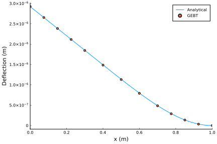
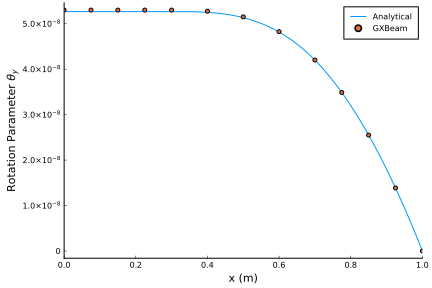
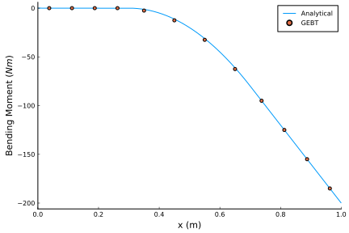
Note that we could have easily performed a nonlinear analysis for this problem by setting linear=false.
Linear Analysis of a Beam Under a Linear Distributed Load
This example shows how to predict the behavior of a beam which is clamped at one end and simply supported at the other end when subjected to a linear distributed load.

using GEBT, LinearAlgebra
nelem = 16
# create points
x = range(0, 1, length=nelem+1)
y = zero(x)
z = zero(x)
points = [[x[i],y[i],z[i]] for i = 1:length(x)]
# index of endpoints for each beam element
start = 1:nelem
stop = 2:nelem+1
# create compliance matrix for each beam element
compliance = fill(Diagonal([2.93944738387698E-10, 0, 0, 4.69246721094557E-08, 6.79584e-8, 1.37068861370898E-09]), nelem)
# create assembly
assembly = Assembly(points, start, stop, compliance=compliance)
# set prescribed conditions
prescribed_conditions = Dict(
# simply supported left endpoint
1 => PrescribedConditions(uz=0),
# clamped right endpoint
nelem+1 => PrescribedConditions(ux=0, uy=0, uz=0, theta_x=0, theta_y=0, theta_z=0)
)
# create distributed load
distributed_loads = Dict()
for i = 1:nelem
distributed_loads[i] = DistributedLoads(assembly, i; s1=x[i],
s2=x[i+1], fz = (s) -> 1000*s)
end
system, converged = static_analysis(assembly, prescribed_conditions=prescribed_conditions,
distributed_loads=distributed_loads, linear=true)
state = AssemblyState(system, assembly, prescribed_conditions=prescribed_conditions)An analytical solution to this over-determined problem can be found using the method of superposition using the analytical solutions to a cantilever with a linearly distributed load and a cantilever with an end load.
# construct analytical solution
EI = 1/6.79584e-8
x_a = range(0.0, 1.0, length=1000)
w_a = @. 1000*(1-x_a)^2/(120*EI)*(4 - 8*(1-x_a) + 5*(1-x_a)^2 - (1-x_a)^3)
slope_a = @. -1000*(1-x_a)/(120*EI)*(8 - 24*(1-x_a) + 20*(1-x_a)^2 - 5*(1-x_a)^3)
M_a = @. 1000/120*(8 - 48*(1-x_a) + 60*(1-x_a)^2 - 20*(1-x_a)^3)
theta_a = -atan.(slope_a)
# adjust coordinate system of analytical solution
M_a = -M_aPlotting the results reveals that the analytical and computational solutions are identical.
using Plots
pyplot()
# set up the plot
plot(
xlim = (0.0, 1.0),
xticks = 0.0:0.2:1.0,
xlabel = "x (m)",
ylim = (0, 1.7e-7),
yticks = 0.0:5e-8:1.5e-7,
ylabel = "Deflection (m)",
grid = false,
overwrite_figure=false
)
x = [assembly.points[ipoint][1] + state.points[ipoint].u[1] for ipoint = 1:length(assembly.points)]
deflection = [state.points[ipoint].u[3] for ipoint = 1:length(assembly.points)]
plot!(x_a, w_a, label="Analytical")
scatter!(x, deflection, label="GEBT")
plot(
xlim = (0.0, 1.0),
xticks = 0.0:0.2:1.0,
xlabel = "x (m)",
ylim = (-6e-7,Inf),
yticks = -6e-7:2e-7:4e-7,
ylabel = "Rotation Parameter \$\\theta_y\$ (Euler Angle)",
grid = false,
overwrite_figure=false
)
x = [assembly.points[ipoint][1] + state.points[ipoint].u[1] for ipoint = 1:length(assembly.points)]
theta = [4*atan.(state.points[ipoint].theta[2]/4) for ipoint = 1:length(assembly.points)]
plot!(x_a, theta_a, label="Analytical")
scatter!(x, theta, label="GEBT")
plot(
xlim = (0.0, 1.0),
xticks = 0.0:0.2:1.0,
xlabel = "x (m)",
yticks = -60:20:20,
ylabel = "Bending Moment (\$Nm\$)",
grid = false,
overwrite_figure=false
)
x = [assembly.elements[ielem].x[1] + state.elements[ielem].u[1] for ielem = 1:length(assembly.elements)]
M = [state.elements[ielem].M[2] for ielem = 1:length(assembly.elements)]
plot!(x_a, M_a, label="Analytical")
scatter!(x, M, label="GEBT")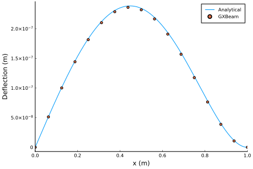
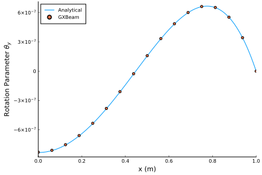
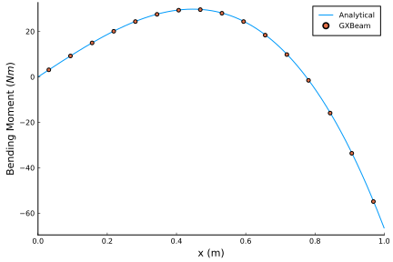
Note that we could have easily performed a nonlinear analysis for this problem by setting linear=false.
Nonlinear Analysis of a Cantilever Subjected to a Constant Tip Load
This example shows how to predict the behavior of a cantilever beam that is subjected to a constant tip load.

using GEBT, LinearAlgebra
L = 1
EI = 1e6
# shear force (applied at end)
# note that solutions for λ > 1.8 do not converge
λ = 0:0.5:16
p = EI/L^2
P = λ*p
# create points
nelem = 16
x = range(0, L, length=nelem+1)
y = zero(x)
z = zero(x)
points = [[x[i],y[i],z[i]] for i = 1:length(x)]
# index of endpoints of each beam element
start = 1:nelem
stop = 2:nelem+1
# compliance matrix for each beam element
compliance = fill(Diagonal([0, 0, 0, 0, 1/EI, 0]), nelem)
# create assembly of interconnected nonlinear beams
assembly = Assembly(points, start, stop, compliance=compliance)
# pre-initialize system storage
static = true
keep_points = [1, nelem+1] # points that we request are included in the system of equations
system = System(assembly, keep_points, static)
# run an analysis for each prescribed tip load
states = Vector{AssemblyState{Float64}}(undef, length(P))
for i = 1:length(P)
# create dictionary of prescribed conditions
prescribed_conditions = Dict(
# fixed left side
1 => PrescribedConditions(ux=0, uy=0, uz=0, theta_x=0, theta_y=0, theta_z=0),
# shear force on right tip
nelem+1 => PrescribedConditions(Fz = P[i])
)
static_analysis!(system, assembly, prescribed_conditions=prescribed_conditions)
states[i] = AssemblyState(system, assembly, prescribed_conditions=prescribed_conditions)
endThe analytical solution to this problem has been presented by several authors. Here we follow the solution by H. J. Barten in "On the Deflection of a Cantilever Beam", after incorporating the corrections they submitted for finding the tip angle.
import Elliptic
δ = range(pi/4, pi/2, length=10^5)[2:end-1]
k = @. cos(pi/4)/sin(δ)
λ_a = @. (Elliptic.F(pi/2, k^2) - Elliptic.F(δ, k^2))^2
θ_a = @. 2*(pi/4 - acos(k))
ξ_a = @. sqrt(2*sin(θ_a)/λ_a) .- 1
η_a = @. 1-2/sqrt(λ_a)*(Elliptic.E(pi/2, k^2) - Elliptic.E(δ, k^2))Plotting the results reveals that the analytical and computational solutions are identical.
using Plots
pyplot()
u = [states[i].points[end].u[1] for i = 1:length(P)]
θ = [states[i].points[end].theta[2] for i = 1:length(P)]
w = [states[i].points[end].u[3] for i = 1:length(P)]
# set up the plot
plot(
xlim = (0, 16),
xticks = 0:1:16,
xlabel = "Nondimensional Force \$\\left(\\frac{PL^2}{EI}\\right)\$",
ylim = (0, 1.2),
yticks = 0.0:0.2:1.2,
ylabel = "Nondimensional Tip Displacements",
grid = false,
overwrite_figure=false
)
plot!([Inf], [Inf], color=:black, label="Analytical")
scatter!([Inf], [Inf], color=:black, label="GEBT")
plot!([Inf], [Inf], color=1, label="Vertical \$\\left(w/L\\right)\$")
plot!([Inf], [Inf], color=2, label="Horizontal \$\\left(-u/L\\right)\$")
plot!([Inf], [Inf], color=3, label="\$ \\theta/(\\pi/2) \$")
plot!(λ_a, η_a, color=1, label="")
scatter!(λ, w/L, color=1, label="")
plot!(λ_a, -ξ_a, color=2, label="")
scatter!(λ, -u/L, color=2, label="")
plot!(λ_a, θ_a*2/pi, color=3, label="")
scatter!(λ, -4*atan.(θ/4)*2/pi, color=3, label="")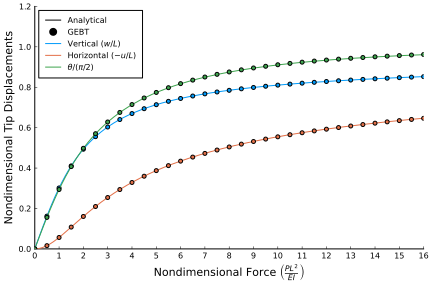
Nonlinear Analysis of a Cantilever Subjected to a Constant Moment
This example shows how to predict the behavior of a cantilever beam that is subjected to a constant tip moment. This is a common benchmark problem for the geometrically nonlinear analysis of beams.

using GEBT, LinearAlgebra
L = 12 # inches
h = w = 1 # inches
E = 30e6 # lb/in^4 Young's Modulus
A = h*w
Iyy = w*h^3/12
Izz = w^3*h/12
# bending moment (applied at end)
# note that solutions for λ > 1.8 do not converge
λ = [0.0, 0.4, 0.8, 1.2, 1.6, 1.8]
m = pi*E*Iyy/L
M = λ*m
# create points
nelem = 16
x = range(0, L, length=nelem+1)
y = zero(x)
z = zero(x)
points = [[x[i],y[i],z[i]] for i = 1:length(x)]
# index of endpoints of each beam element
start = 1:nelem
stop = 2:nelem+1
# compliance matrix for each beam element
compliance = fill(Diagonal([1/(E*A), 0, 0, 0, 1/(E*Iyy), 1/(E*Izz)]), nelem)
# create assembly of interconnected nonlinear beams
assembly = Assembly(points, start, stop, compliance=compliance)
# pre-initialize system storage
static = true
keep_points = [1, nelem+1] # points that we request are included in the system of equations
system = System(assembly, keep_points, static)
# run an analysis for each prescribed bending moment
states = Vector{AssemblyState{Float64}}(undef, length(M))
for i = 1:length(M)
# create dictionary of prescribed conditions
prescribed_conditions = Dict(
# fixed left side
1 => PrescribedConditions(ux=0, uy=0, uz=0, theta_x=0, theta_y=0, theta_z=0),
# moment on right side
nelem+1 => PrescribedConditions(Mz = M[i])
)
static_analysis!(system, assembly, prescribed_conditions=prescribed_conditions)
states[i] = AssemblyState(system, assembly, prescribed_conditions=prescribed_conditions)
endThis problem has a simple analytical solution, which we obtained from "Study of the Geometric Stiffening Effect: Comparison of Different Formulations" by Juana M. Mayo, Daniel Garcia-Vallejo, and Jaime Dominguez.
# analytical solution (ρ = E*I/M)
analytical(x, ρ) = ifelse(ρ == Inf, zeros(3), [ρ*sin(x/ρ)-x, ρ*(1-cos(x/ρ)), 0])Plotting the results reveals that the analytical and computational results are identical.
using Plots
pyplot()
# set up the plot
plot(
xlim = (-0.25, 1.1),
xticks = -0.25:0.25:1.0,
xlabel = "x/L",
ylim = (-0.05, 0.8),
yticks = 0.0:0.2:0.8,
ylabel = "y/L",
aspect_ratio = 1.0,
grid = false,
overwrite_figure=false
)
# create dummy legend entries for GEBT and Analytical
scatter!([NaN, NaN], [NaN, NaN], color=:black, label="GEBT")
plot!([NaN, NaN], [NaN, NaN], color=:black, label="Analytical")
# plot the data
for i = 1:length(M)
# GEBT
x = [assembly.points[ipoint][1] + states[i].points[ipoint].u[1] for ipoint = 1:length(assembly.points)]
y = [assembly.points[ipoint][2] + states[i].points[ipoint].u[2] for ipoint = 1:length(assembly.points)]
scatter!(x/L, y/L, label="", color = i)
# Analytical
x0 = range(0, L, length=100)
deflection = analytical.(x0, E*Iyy/M[i])
x = (x0 + getindex.(deflection, 1))
y = getindex.(deflection, 2)
plot!(x/L, y/L, label="λ=$(λ[i])", color=i)
end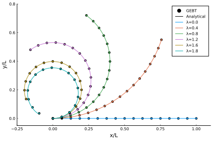
Nonlinear Analysis of the Bending of a Curved Beam in 3D Space
This example is also a common benchmark problem for the geometrically exact bending of nonlinear beams.

using GEBT, LinearAlgebra
# problem constants
R = 100
L = R*pi/4 # inches
h = w = 1 # inches
E = 1e7 # psi Young's Modulus
ν = 0.0
G = E/(2*(1+ν))
# beam starting point and curvature
r = [0, 0, 0]
frame = [0 -1 0; 1 0 0; 0 0 1]
k = [0, 0, -1/R]
# cross section properties
A = h*w
Ay = A
Az = A
Iyy = w*h^3/12
Izz = w^3*h/12
J = Iyy + Izz
# discretize the beam
nelem = 16
ΔL, xp, xm, Cab = discretize_beam(L, r, nelem, Cab=frame, k = k)
# force
P = 600 # lbs
# index of left and right endpoints of each beam element
pt1 = 1:nelem
pt2 = 2:nelem+1
# compliance matrix for each beam element
compliance = fill(Diagonal([1/(E*A), 1/(G*Ay), 1/(G*Az), 1/(G*J), 1/(E*Iyy), 1/(E*Izz)]), nelem)
# create assembly of interconnected nonlinear beams
assembly = Assembly(xp, pt1, pt2, compliance=compliance, frames=Cab,
lengths=ΔL, midpoints=xm)
# create dictionary of prescribed conditions
prescribed_conditions = Dict(
# fixed left endpoint
1 => PrescribedConditions(ux=0, uy=0, uz=0, theta_x=0, theta_y=0, theta_z=0),
# force on right endpoint
nelem+1 => PrescribedConditions(Fz=P)
)
system, converged = static_analysis(assembly, prescribed_conditions=prescribed_conditions)
state = AssemblyState(system, assembly, prescribed_conditions=prescribed_conditions)
println("Tip Displacement: ", state.points[end].u)
println("Tip Displacement (Bathe and Bolourch): [-13.4, -23.5, 53.4]")
# write a file that can be visualized in ParaView
write_vtk("cantilever-curved", assembly, state)Tip Displacement: [-13.577383726758569, -23.545303336988038, 53.45800757548929] Tip Displacement (Bathe and Bolourch): [-13.4, -23.5, 53.4]

The calculated tip displacements match those reported by Bathe and Bolourch in "Large Displacement Analysis of Three-Dimensional Beam Structures" closely, thus verifying our GEBT implementation.
Rotating Beam with a Swept Tip
In this example we analyze a rotating beam with a swept tip. The parameters for this example come from "Finite element solution of nonlinear intrinsic equations for curved composite beams" by Hodges, Shang, and Cesnik.

using GEBT, LinearAlgebra
sweep = 45 * pi/180
rpm = 0:25:750
# straight section of the beam
L_b1 = 31.5 # inch
r_b1 = [2.5, 0, 0]
nelem_b1 = 13
lengths_b1, xp_b1, xm_b1, Cab_b1 = discretize_beam(L_b1, r_b1, nelem_b1)
# swept section of the beam
L_b2 = 6 # inch
r_b2 = [34, 0, 0]
nelem_b2 = 3
cs, ss = cos(sweep), sin(sweep)
frame_b2 = [cs ss 0; -ss cs 0; 0 0 1]
lengths_b2, xp_b2, xm_b2, Cab_b2 = discretize_beam(L_b2, r_b2, nelem_b2, Cab=frame_b2)
# combine elements and points into one array
nelem = nelem_b1 + nelem_b2
points = vcat(xp_b1, xp_b2[2:end])
start = 1:nelem_b1 + nelem_b2
stop = 2:nelem_b1 + nelem_b2 + 1
lengths = vcat(lengths_b1, lengths_b2)
midpoints = vcat(xm_b1, xm_b2)
Cab = vcat(Cab_b1, Cab_b2)
# cross section
w = 1 # inch
h = 0.063 # inch
# material properties
E = 1.06e7 # lb/in^2
ν = 0.325
ρ = 2.51e-4 # lb sec^2/in^4
# shear and torsion correction factors
ky = 1.2000001839588001
kz = 14.625127919304001
kt = 65.85255016982444
A = h*w
Iyy = w*h^3/12
Izz = w^3*h/12
J = Iyy + Izz
# apply corrections
Ay = A/ky
Az = A/kz
Jx = J/kt
G = E/(2*(1+ν))
compliance = fill(Diagonal([1/(E*A), 1/(G*Ay), 1/(G*Az), 1/(G*Jx), 1/(E*Iyy), 1/(E*Izz)]), nelem)
mass = fill(Diagonal([ρ*A, ρ*A, ρ*A, ρ*J, ρ*Iyy, ρ*Izz]), nelem)
# create assembly
assembly = Assembly(points, start, stop, compliance=compliance, mass=mass, frames=Cab, lengths=lengths, midpoints=midpoints)
# create dictionary of prescribed conditions
prescribed_conditions = Dict(
# root section is fixed
1 => PrescribedConditions(ux=0, uy=0, uz=0, theta_x=0, theta_y=0, theta_z=0)
)
nonlinear_states = Vector{AssemblyState{Float64}}(undef, length(rpm))
linear_states = Vector{AssemblyState{Float64}}(undef, length(rpm))
for i = 1:length(rpm)
# global frame rotation
w0 = [0, 0, rpm[i]*(2*pi)/60]
# perform nonlinear steady state analysis
system, converged = steady_state_analysis(assembly,
angular_velocity = w0,
prescribed_conditions = prescribed_conditions)
nonlinear_states[i] = AssemblyState(system, assembly, prescribed_conditions=prescribed_conditions)
# perform linear steady state analysis
system, converged = steady_state_analysis(assembly,
angular_velocity = w0,
prescribed_conditions = prescribed_conditions,
linear = true)
linear_states[i] = AssemblyState(system, assembly, prescribed_conditions=prescribed_conditions)
endTo visualize the solutions we will plot the root moment and tip deflections against the angular speed.
using Plots
pyplot()
# root moment
plot(
xlim = (0, 760),
xticks = 0:100:750,
xlabel = "Angular Speed (RPM)",
yticks = 0.0:2:12,
ylabel = "\$M_z\$ at the root (lb-in)",
grid = false,
overwrite_figure=false
)
Mz_nl = [-nonlinear_states[i].points[1].M[3] for i = 1:length(rpm)]
Mz_l = [-linear_states[i].points[1].M[3] for i = 1:length(rpm)]
plot!(rpm, Mz_nl, label="Nonlinear")
plot!(rpm, Mz_l, label="Linear")
# x tip deflection
plot(
xlim = (0, 760),
xticks = 0:100:750,
xlabel = "Angular Speed (RPM)",
ylim = (-0.002, 0.074),
yticks = 0.0:0.01:0.07,
ylabel = "\$u_x\$ at the tip (in)",
grid = false,
overwrite_figure=false
)
ux_nl = [nonlinear_states[i].points[end].u[1] for i = 1:length(rpm)]
ux_l = [linear_states[i].points[end].u[1] for i = 1:length(rpm)]
plot!(rpm, ux_nl, label="Nonlinear")
plot!(rpm, ux_l, label="Linear")
# y tip deflection
plot(
xlim = (0, 760),
xticks = 0:100:750,
xlabel = "Angular Speed (RPM)",
ylim = (-0.01, 0.27),
yticks = 0.0:0.05:0.25,
ylabel = "\$u_y\$ at the tip (in)",
grid = false,
overwrite_figure=false
)
uy_nl = [nonlinear_states[i].points[end].u[2] for i = 1:length(rpm)]
uy_l = [linear_states[i].points[end].u[2] for i = 1:length(rpm)]
plot!(rpm, uy_nl, label="Nonlinear")
plot!(rpm, uy_l, label="Linear")
# rotation of the tip
plot(
xlim = (0, 760),
xticks = 0:100:750,
xlabel = "Angular Speed (RPM)",
ylabel = "\$θ_z\$ at the tip",
grid = false,
overwrite_figure=false
)
theta_z_nl = [4*atan(nonlinear_states[i].points[end].theta[3]/4) for i = 1:length(rpm)]
theta_z_l = [4*atan(linear_states[i].points[end].theta[3]/4) for i = 1:length(rpm)]
plot!(rpm, theta_z_nl, label="Nonlinear")
plot!(rpm, theta_z_l, label="Linear")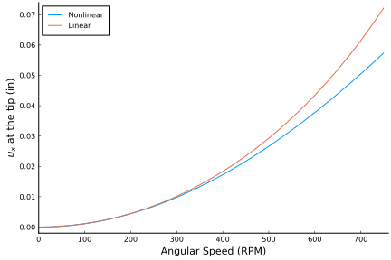 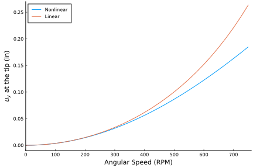 
We will now compute the eigenvalues of this system for a range of sweep angles and and angular speeds.
sweep = (0:5:45) * pi/180
rpm = [0, 500, 750]
nev = 30
λ = Matrix{Vector{ComplexF64}}(undef, length(sweep), length(rpm))
U = Matrix{Matrix{ComplexF64}}(undef, length(sweep), length(rpm))
MV = Matrix{Matrix{ComplexF64}}(undef, length(sweep), length(rpm))
state = Matrix{AssemblyState{Float64}}(undef, length(sweep), length(rpm))
eigenstates = Matrix{Vector{AssemblyState{ComplexF64}}}(undef, length(sweep), length(rpm))
for i = 1:length(sweep)
# straight section of the beam
L_b1 = 31.5 # inch
r_b1 = [2.5, 0, 0]
nelem_b1 = 20
lengths_b1, xp_b1, xm_b1, Cab_b1 = discretize_beam(L_b1, r_b1, nelem_b1)
# swept section of the beam
L_b2 = 6 # inch
r_b2 = [34, 0, 0]
nelem_b2 = 20
cs, ss = cos(sweep[i]), sin(sweep[i])
frame_b2 = [cs ss 0; -ss cs 0; 0 0 1]
lengths_b2, xp_b2, xm_b2, Cab_b2 = discretize_beam(L_b2, r_b2, nelem_b2, Cab=frame_b2)
# combine elements and points into one array
nelem = nelem_b1 + nelem_b2
points = vcat(xp_b1, xp_b2[2:end])
start = 1:nelem_b1 + nelem_b2
stop = 2:nelem_b1 + nelem_b2 + 1
lengths = vcat(lengths_b1, lengths_b2)
midpoints = vcat(xm_b1, xm_b2)
Cab = vcat(Cab_b1, Cab_b2)
compliance = fill(Diagonal([1/(E*A), 1/(G*Ay), 1/(G*Az), 1/(G*Jx), 1/(E*Iyy), 1/(E*Izz)]), nelem)
mass = fill(Diagonal([ρ*A, ρ*A, ρ*A, ρ*J, ρ*Iyy, ρ*Izz]), nelem)
# create assembly
assembly = Assembly(points, start, stop, compliance=compliance, mass=mass, frames=Cab, lengths=lengths, midpoints=midpoints)
# create system
keep_points = [1, nelem_b1+1, nelem+1] # points that we request are included in the system of equations
system = System(assembly, keep_points, false)
for j = 1:length(rpm)
# global frame rotation
w0 = [0, 0, rpm[j]*(2*pi)/60]
# eigenvalues and (right) eigenvectors
system, λ[i,j], V, converged = eigenvalue_analysis!(system, assembly,
angular_velocity = w0,
prescribed_conditions = prescribed_conditions,
nev=nev)
# corresponding left eigenvectors
U[i,j] = left_eigenvectors(system, λ[i,j], V)
# post-multiply mass matrix with right eigenvector matrix
# (we use this later for correlating eigenvalues)
MV[i,j] = system.M * V
# process state and eigenstates
state[i,j] = AssemblyState(system, assembly; prescribed_conditions=prescribed_conditions)
eigenstates[i,j] = [AssemblyState(system, assembly, V[:,k];
prescribed_conditions=prescribed_conditions) for k = 1:nev]
end
endWe can correlate each eigenmode by taking advantage of the fact that left and right eigenvectors satisfy the following relationships:
# set previous left eigenvector matrix
U_p = copy(U[1,1])
for j = 1:length(rpm)
for i = 1:length(sweep)
# construct correlation matrix
C = U_p*MV[i,j]
# correlate eigenmodes
perm, corruption = correlate_eigenmodes(C)
# re-arrange eigenvalues and eigenvectors
λ[i,j] = λ[i,j][perm]
U[i,j] = U[i,j][perm,:]
MV[i,j] = MV[i,j][:,perm]
eigenstates[i,j] = eigenstates[i,j][perm]
# update previous eigenvector matrix
U_p .= U[i,j]
end
# update previous eigenvector matrix
U_p .= U[1,j]
end
frequency = [[imag(λ[i,j][k])/(2*pi) for i = 1:length(sweep), j=1:length(rpm)] for k = 2:2:nev]
names = ["First Bending Mode", "Second Bending Mode", "Third Bending Mode"]
indices = [1, 2, 5]
for k = 1:length(indices)
plot(
title = names[k],
xticks = 0:15:45,
xlabel = "Sweep Angle (degrees)",
ylim = (0, Inf),
ylabel = "Frequency (Hz)",
grid = false,
overwrite_figure=false
)
for j = length(rpm):-1:1
plot!(sweep*180/pi, frequency[indices[k]][:,j], label="$(rpm[j]) RPM")
end
plot!(show=true)
end
names = ["1T/5B", "5B/1T", "4B/1T"]
indices = [6, 7, 5]
plot(
title = "Coupled Torsion-Bending Modes at 750 RPM",
xticks = 0:15:45,
xlabel = "Sweep Angle (degrees)",
ylim = (0, Inf),
ylabel = "Frequency (Hz)",
grid = false,
overwrite_figure=false
)
for k = 1:length(indices)
plot!(sweep*180/pi, frequency[indices[k]][:,end], label=names[k])
end
plot!(show=true)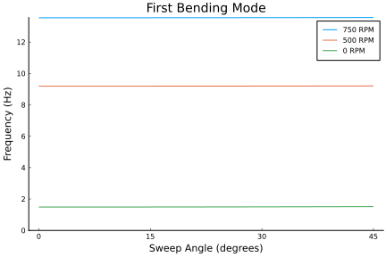 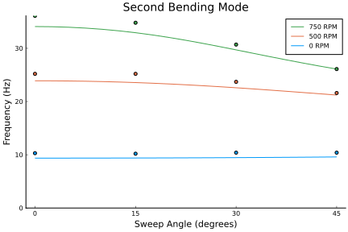 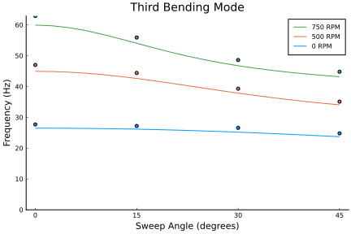 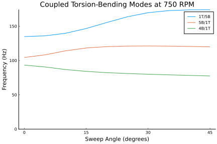
In this case our eigenmode correlations worked, but remember that large changes in the underlying parameters (or just drastic changes in the eigenvectors themselves due to a small perturbation) can cause these automatic eigenmode correlations to fail.
We can also visualize eigenmodes using ParaView. Here we will visualize the first bending mode for the 45 degree swept tip at a rotational speed of 750 RPM.
write_vtk("rotating-beam-45d-750rpm-bending-mode-1", assembly, state[end,end], λ[end,end][1],
eigenstates[end,end][1], mode_scaling=100.0)
Dynamic Nonlinear Analysis of a Wind Turbine Blade
using GEBT, LinearAlgebra
L = 60 # m
# create points
nelem = 10
x = range(0, L, length=nelem+1)
y = zero(x)
z = zero(x)
points = [[x[i],y[i],z[i]] for i = 1:length(x)]
# index of endpoints of each beam element
start = 1:nelem
stop = 2:nelem+1
# stiffness matrix for each beam element
stiffness = fill(
[2.389e9 1.524e6 6.734e6 -3.382e7 -2.627e7 -4.736e8
1.524e6 4.334e8 -3.741e6 -2.935e5 1.527e7 3.835e5
6.734e6 -3.741e6 2.743e7 -4.592e5 -6.869e5 -4.742e6
-3.382e7 -2.935e5 -4.592e5 2.167e7 -6.279e5 1.430e6
-2.627e7 1.527e7 -6.869e5 -6.279e5 1.970e7 1.209e7
-4.736e8 3.835e5 -4.742e6 1.430e6 1.209e7 4.406e8],
nelem)
# mass matrix for each beam element
mass = fill(
[258.053 0.0 0.0 0.0 7.07839 -71.6871
0.0 258.053 0.0 -7.07839 0.0 0.0
0.0 0.0 258.053 71.6871 0.0 0.0
0.0 -7.07839 71.6871 48.59 0.0 0.0
7.07839 0.0 0.0 0.0 2.172 0.0
-71.6871 0.0 0.0 0.0 0.0 46.418],
nelem)
# create assembly of interconnected nonlinear beams
assembly = Assembly(points, start, stop; stiffness=stiffness, mass=mass)
# simulation time
dt = 0.001
t = 0:dt:2.0
nstep = length(t)
# prescribed conditions
prescribed_conditions = Dict(
# fixed left side
1 => PrescribedConditions(dt; nstep=nstep, ux=0, uy=0, uz=0, theta_x=0, theta_y=0, theta_z=0),
# force on right side
nelem+1 => PrescribedConditions(dt; nstep=nstep, Fz=(t)->1e5*sin.(20*t))
)
system, history, converged = time_domain_analysis(assembly, dt; prescribed_conditions=prescribed_conditions, nstep=nstep)We can visualize tip displacements and the resultant forces in the root by accessing the post-processed results for each time step contained in the variable history. Note that the root resultant forces for this case are equal to the external forces/moments, but with opposite sign.
using Plots
pyplot()
point = vcat(fill(nelem+1, 6), fill(1, 6))
field = [:u, :u, :u, :theta, :theta, :theta, :F, :F, :F, :M, :M, :M]
direction = [1, 2, 3, 1, 2, 3, 1, 2, 3, 1, 2, 3]
ylabel = ["\$u_x\$ (\$m\$)", "\$u_y\$ (\$m\$)", "\$u_z\$ (\$m\$)",
"\$\\theta_x\$ (degree)", "\$\\theta_y\$ (degree)", "\$\\theta_z\$ (degree)",
"\$F_x\$ (\$N\$)", "\$F_y\$ (\$N\$)", "\$F_z\$ (\$N\$)",
"\$M_x\$ (\$Nm\$)", "\$M_y\$ (\$Nm\$)", "\$M_z\$ (\$N\$)"]
for i = 1:12
plot(
xlim = (0, 2.0),
xticks = 0:0.5:2.0,
xlabel = "Time (s)",
ylabel = ylabel[i],
grid = false,
overwrite_figure=false
)
y = [getproperty(state.points[point[i]], field[i])[direction[i]] for state in history]
if field[i] == :theta
# convert to Euler angle
@. y = 4*atan(y/4)
# convert to degrees
@. y = rad2deg(y)
end
if field[i] == :F || field[i] == :M
y = -y
end
plot!(t, y, label="")
plot!(show=true)
end 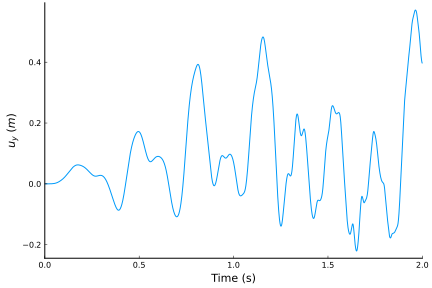 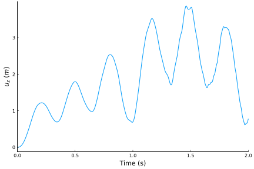 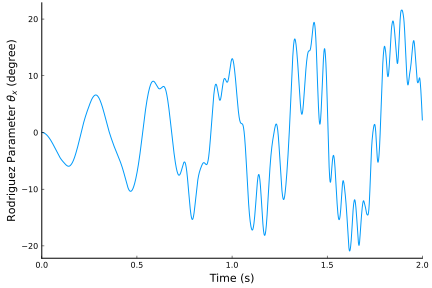 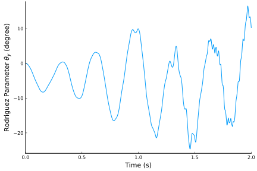 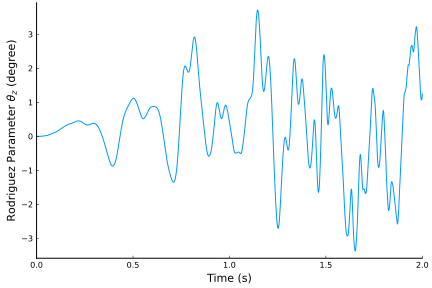 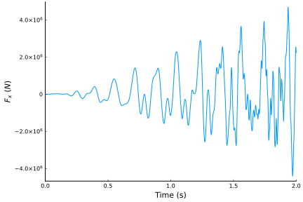 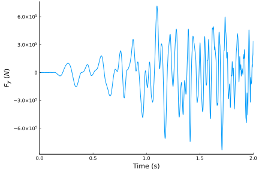 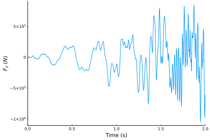 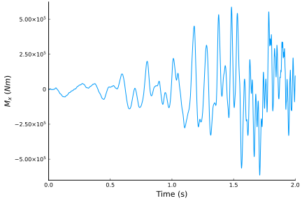 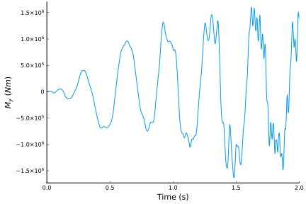 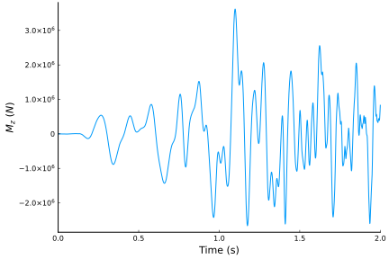
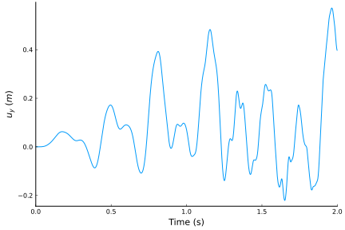 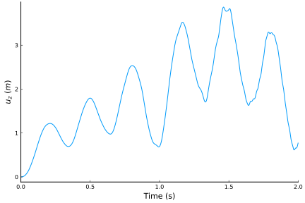 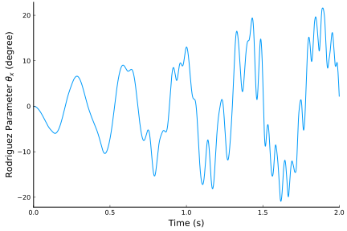 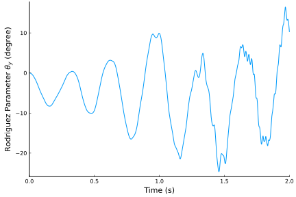 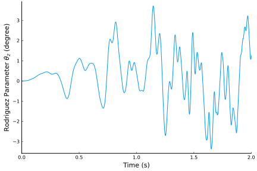 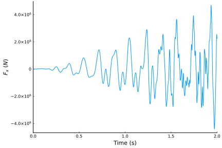 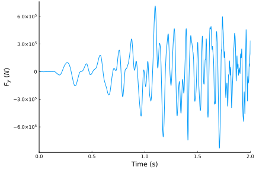 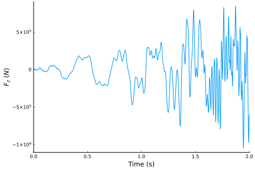 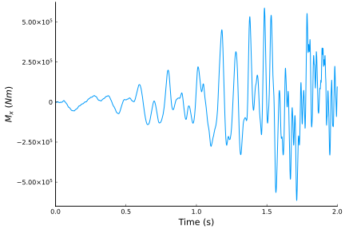 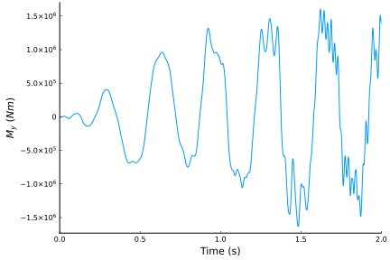 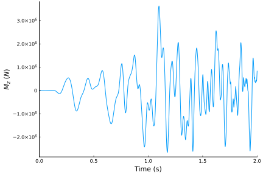
These plots are identical to those presented by Qi Wang, Wenbin Yu, and Michael A. Sprague in "Geometric Nonlinear Analysis of Composite Beams Using Wiener-Milenkovic Parameters".
We can also visualize the time history of the system using ParaView.
write_vtk("dynamic-wind-turbine", assembly, history, dt)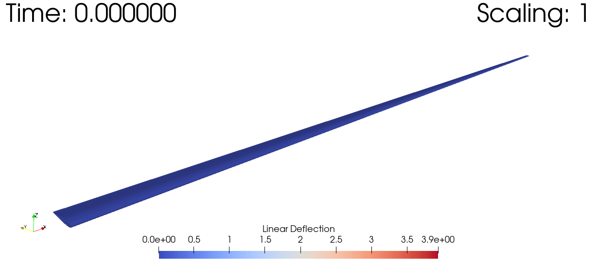
Nonlinear Time-Marching and Eigenvalue Analysis of a Beam Assembly
using GEBT, LinearAlgebra
nelem = 20
nelem_b1 = div(nelem, 2)
nelem_b2 = div(nelem, 2)
# beam 1
L_b1 = sqrt(1 + 0.5^2)
r_b1 = [0, -0.5, 0]
s_b1, c_b1 = 0.5/L_b1, 1/L_b1
frame_b1 = [c_b1 -s_b1 0; s_b1 c_b1 0; 0 0 1]
lengths_b1, xp_b1, xm_b1, Cab_b1 = discretize_beam(L_b1, r_b1, nelem_b1, Cab=frame_b1)
# beam 2
L_b2 = sqrt(1 + 0.5^2)
r_b2 = [1, 0.0, 0]
s_b2, c_b2 = 0.5/L_b2, -1/L_b2
frame_b2 = [c_b2 -s_b2 0; s_b2 c_b2 0; 0 0 1]
lengths_b2, xp_b2, xm_b2, Cab_b2 = discretize_beam(L_b2, r_b2, nelem_b2, Cab=frame_b2)
# combine elements and points into one array
points = vcat(xp_b1, xp_b2[2:end])
start = 1:nelem_b1 + nelem_b2
stop = 2:nelem_b1 + nelem_b2 + 1
lengths = vcat(lengths_b1, lengths_b2)
midpoints = vcat(xm_b1, xm_b2)
Cab = vcat(Cab_b1, Cab_b2)
# cross-sections for both beams
w = 0.1 # meters
h = 0.05 # meters
E = 70e9 # Pa
ν = 0.35
ρ = 2700 # kg/m^3
# shear correction factors
AR = w/h
ky = 6/5 + (ν/(1+ν))^2*AR^-4*(1/5 - 18/(AR*pi^5)*sum([tanh(m*pi*AR)/m^5 for m = 1:1000]))
kz = 6/5 + (ν/(1+ν))^2*AR^4*(1/5 - 18/(pi^5)*sum([tanh(n*pi*AR^-1)/n^5 for n = 1:1000]))
A = h*w
Ay = A/ky
Az = A/kz
Iyy = w*h^3/12
Izz = w^3*h/12
J = Iyy + Izz
G = E/(2*(1+ν))
compliance = fill(Diagonal([1/(E*A), 1/(G*Ay), 1/(G*Az), 1/(G*J), 1/(E*Iyy), 1/(E*Izz)]), nelem)
minv = fill(Diagonal([ρ*A, ρ*A, ρ*A, ρ*J, ρ*Iyy, ρ*Izz])^-1, nelem)
# create assembly
assembly = Assembly(points, start, stop, compliance=compliance, minv=minv,
frames=Cab, lengths=lengths, midpoints=midpoints)
# time
dt = 0.001
t = 0:dt:0.5
nstep = length(t)
# create dictionary of prescribed conditions
prescribed_conditions = Dict(
# fixed endpoint on beam 1
1 => PrescribedConditions(dt, nstep=nstep, ux=0, uy=0, uz=0, theta_x=0, theta_y=0, theta_z=0),
# fixed endpoint on beam 2
nelem+1 => PrescribedConditions(dt, nstep=nstep, ux=0, uy=0, uz=0, theta_x=0, theta_y=0, theta_z=0),
# force applied on connected endpoint
nelem_b1+1 => PrescribedConditions(dt, nstep=nstep, Fz=(t)->1e5*sin(20*t))
)
system, history, converged = time_domain_analysis(assembly, dt,
prescribed_conditions=prescribed_conditions, nstep = nstep)
system, λ, V, converged = eigenvalue_analysis(assembly,
prescribed_conditions=prescribed_conditions, nstep = nstep, nev = 50)
Us = left_eigenvectors(system, λ, V)